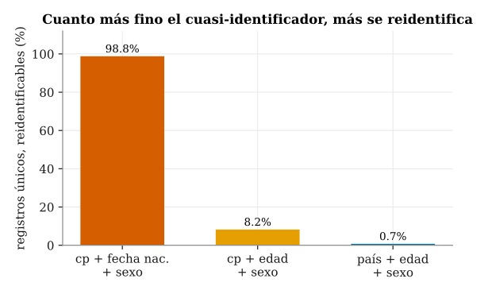
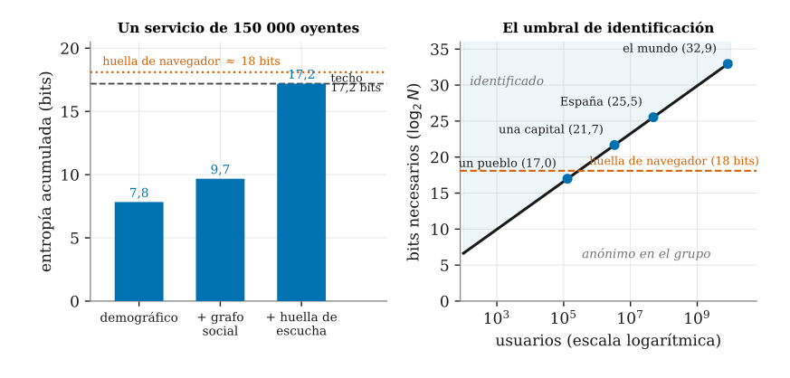
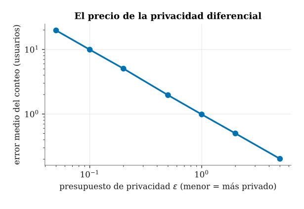
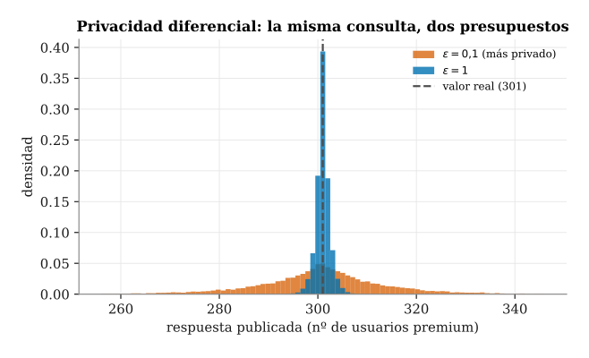
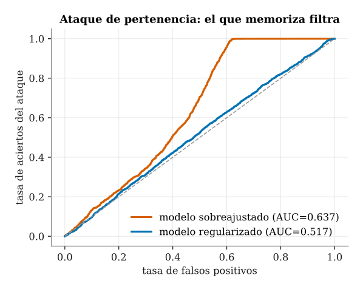
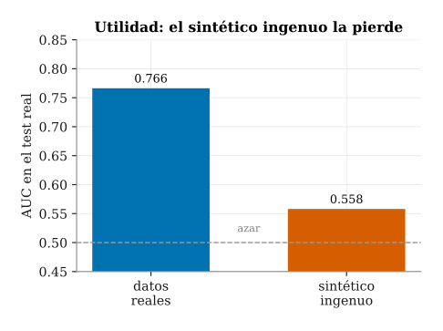

Capítulo 15. Privacidad y confidencialidad
▶ Ejecutar este capítulo en Binder
La primera vez que se abre, Binder construye el entorno en la nube (unos 10-20 min); verás una pantalla de progreso. Después queda en caché y abre en segundos. Si parece que no responde, espera a que termine de construirse o vuelve a intentarlo.
Los dos capítulos anteriores nos enseñaron a predecir: a ajustar un modelo con scikit-learn y PyTorch (caps. 13 y 14) y a juzgarlo con honestidad sobre datos que no había visto. Pero un modelo no aprende del aire: aprende de un conjunto de ejemplos, y ese combustible casi nunca es anónimo. Detrás de cada fila suele haber una persona —su edad, su domicilio, su historial— y en este capítulo lo hará de la forma más delicada posible, porque trabajaremos con el historial de escucha de cada usuario asociado a un código postal. Predecir bien no basta si por el camino exponemos a quien nos confió el dato.
Protegerlo no es cortesía ni buena voluntad: es una obligación legal y ética con nombre y articulado. En Europa esa obligación la fija el Reglamento General de Protección de Datos (RGPD) y, desde 2024, el Reglamento de Inteligencia Artificial (AI Act), que regula además cómo pueden usarse esos datos para entrenar sistemas como los del cap. 13. El libro venía preparando el terreno: la política de datos de las tres clases de los caps. 1 y 5 (§1.1.5) nos hizo etiquetar cada cifra por su procedencia; la privacidad eleva esa disciplina a marco jurídico y le añade una pregunta que la mera trazabilidad no contempla: no solo de dónde viene el dato, sino a quién identifica y qué podemos hacer con él sin dañarle.
El recorrido tiene seis paradas. Empezamos aquí (§15.1) por el marco: qué es un dato personal, qué exige el RGPD y qué añade el AI Act. Después veremos por qué «borrar el nombre» no basta —la anonimización, la seudonimización y sus límites, con casos reales de reidentificación (§15.2)— y estudiaremos la única defensa con garantía matemática, la privacidad diferencial (§15.3). Comprobaremos luego que el propio modelo puede filtrar a quien lo entrenó (§15.4), exploraremos los datos sintéticos como herramienta de protección (§15.5) y cerraremos con la cadena de custodia y la gobernanza del dato (§15.7). El hilo, como en todo el libro, es la música; solo que ahora la escucha alguien.
De la política de datos a la privacidad
Necesitamos un conjunto sobre el que trabajar sin poner a nadie en riesgo, y la única forma honesta de hacerlo en un libro es fabricarlo. El dataset de este capítulo, perfiles_escucha, es un conjunto de perfiles de escucha sintético de 50 000 usuarios de un servicio de streaming, declarado de Clase 2 igual que la música de los caps. 13 y 14: no hay ni una persona real, porque nombres, fechas y domicilios los inventó el generador src/cap15_privacidad.py con la semilla de siempre. La costura con el resto del libro es deliberada: el género favorito y el perfil acústico de cada usuario se muestrean de las distribuciones reales por género de musica.parquet —la misma música que nos acompaña desde el cap. 5—, de modo que la etiqueta comercial, ser suscriptor premium, depende de la intensidad de escucha, del perfil y de la edad. Que sea inventado no lo hace inocuo como ejemplo: lo tratamos en todo momento como si fuera un dato personal sensible, porque enseñar privacidad con datos reales sería la primera imprudencia. Lo cargamos con las herramientas de pandas del cap. 5:
import pandas as pd
perf = pd.read_parquet(
"data/processed/perfiles_escucha.parquet")
print(perf.shape) # (50000, 14)
# esquema: catorce columnas por usuario
print(list(perf.columns))
# ['id', 'fecha_nac', 'edad', 'sexo', 'pais',
# 'cp', 'genero_top', 'energia_media',
# 'valence_media', 'minutos_dia', 'n_artistas',
# 'sigue_a', 'huella_top50', 'premium']
print(perf[["edad", "sexo", "pais",
"genero_top", "premium"]].head())
# edad sexo pais genero_top premium
# 0 23 F Corea del Sur k-pop 0
# 1 50 M Brasil kids 0
# 2 20 F Nigeria world-music 0
# 3 46 M Italia opera 1
# 4 24 M México sleep 0
print(f"premium: {perf['premium'].mean()*100:.1f} %")
# premium: 11.7 %Catorce columnas que dan mucho de sí: un identificador id, la fecha de nacimiento, la edad, el sexo, el país, el código postal cp (seis por país), el género más escuchado, la energía y la positividad (valence) medias de su escucha, los minutos diarios, el número de artistas, a cuántas cuentas sigue, la huella de escucha y la etiqueta premium, que marca al \(11{,}7\) % del conjunto. Aparentemente son cifras anodinas; enseguida veremos que la combinación de solo tres de ellas basta para señalar a una persona concreta entre las cincuenta mil.
Qué es un dato personal
El RGPD —en rigor, el Reglamento (UE) 2016/679 (European Parliament and Council of the European Union 2016)— define el dato personal (personal data) en su artículo 4.1 como «toda información sobre una persona física identificada o identificable». La clave está en identificable: no hace falta un nombre para que el dato sea personal, basta con que permita llegar a la persona por medios razonables. De ahí la distinción práctica que vertebra el capítulo. Están los identificadores directos —el nombre, el DNI, el número de la seguridad social—, que apuntan a un individuo sin más; y están los cuasi-identificadores (quasi-identifiers) —la fecha de nacimiento, el sexo, el código postal—, que por separado no dicen quién eres, pero combinados estrechan el cerco hasta dejar a una sola persona. La información personal identificable (PII) abarca ambos. En nuestros perfiles no hay nombres, pero fecha_nac, sexo y cp son tres cuasi-identificadores de manual.
No todos los datos pesan igual. El artículo 9 reserva un régimen especial a las categorías especiales: origen racial o étnico, opiniones políticas, convicciones religiosas, afiliación sindical, datos genéticos y biométricos, orientación sexual y los datos de salud. Tratarlos está prohibido por defecto y solo se levanta la prohibición en supuestos tasados (consentimiento explícito, interés público, investigación con garantías). Nuestra etiqueta premium no es una categoría especial —es comercialmente sensible—, pero el historial de escucha del que se infiere sí puede delatar varias: la música religiosa, la militante o la de una comunidad concreta revela creencias, ideología u orientación. Que sea sintético no cambia la lección; cambia solo que podemos manipularlo sin dañar a nadie.
Los principios y las bases del RGPD
El RGPD se adoptó el 27 de abril de 2016 y es aplicable en toda la Unión desde el 25 de mayo de 2018. Su artículo 5 fija siete principios que todo tratamiento debe respetar: licitud, lealtad y transparencia; limitación de la finalidad (el dato recogido para un fin no vale para otro incompatible); minimización de datos (recoger solo lo imprescindible para el fin); exactitud; limitación del plazo de conservación; integridad y confidencialidad; y responsabilidad proactiva (accountability), que obliga no solo a cumplir, sino a poder demostrarlo. La minimización merece un subrayado para quien hace ciencia de datos: la tentación de guardar «por si acaso» todas las columnas choca de frente con el principio. Si el modelo de recomendación no necesita la fecha de nacimiento exacta, no debe pedirla; cada cuasi-identificador que retiramos es un riesgo que desaparece.
Además, ningún tratamiento es lícito sin una base legal. El artículo 6.1 enumera seis, y basta con una: el consentimiento del interesado, la ejecución de un contrato, el cumplimiento de una obligación legal, la protección de intereses vitales, el cumplimiento de una misión de interés público y el interés legítimo del responsable. Elegir la base correcta no es un trámite: determina qué derechos puede ejercer la persona y hasta dónde llega lo que podemos hacer con su dato.
Anónimo no es lo mismo que seudónimo
La frontera más importante —y la más malentendida— separa dos operaciones que suenan parecidas. La seudonimización (pseudonymisation) sustituye los identificadores directos por un código, guardando aparte la tabla que permite deshacer el cambio; es una medida de seguridad excelente, pero el considerando 26 del Reglamento es tajante: el dato seudonimizado sigue siendo dato personal, porque la reidentificación es posible con la información adicional. La anonimización (anonymisation), en cambio, rompe el vínculo de forma irreversible, y solo entonces —dice el mismo considerando 26— el dato queda fuera del RGPD, libre para compartirse o publicarse. La consecuencia es enorme: si logramos anonimizar de verdad perfiles_escucha, deja de aplicarse todo el Reglamento. El problema, como veremos en la §15.2, es que la anonimización auténtica es mucho más difícil de lo que parece, y que casi todo lo que la industria llama «anónimo» es en realidad seudónimo mal disfrazado.
El AI Act: regular la máquina, no solo el dato
El RGPD protege el dato; el AI Act —el Reglamento (UE) 2024/1689 (European Parliament and Council of the European Union 2024)— protege frente a lo que las máquinas hacen con él. Adoptado el 13 de junio de 2024 y en vigor desde el 1 de agosto de 2024, es el primer marco horizontal del mundo que regula la inteligencia artificial de forma transversal, y lo hace organizando los sistemas por su riesgo. En la cúspide, el riesgo inaceptable: prácticas prohibidas de raíz, como la puntuación social o cierto reconocimiento biométrico masivo. Debajo, el alto riesgo, donde caen los sistemas que deciden sobre la salud, el empleo o el crédito de las personas: se permiten, pero bajo requisitos estrictos de calidad de los datos, documentación, supervisión humana y robustez. Más abajo, el riesgo limitado, sujeto a deberes de transparencia (avisar de que se habla con una máquina o de que un contenido es sintético); y por último el riesgo mínimo, sin obligaciones específicas.
El calendario es escalonado: las prohibiciones de las prácticas de riesgo inaceptable se aplican desde el 2 de febrero de 2025, y las obligaciones de los sistemas de alto riesgo entran en vigor de forma progresiva hacia el 2 de agosto de 2026 y, para los integrados en productos regulados, el 2 de agosto de 2027. Para nosotros, la lectura es directa: un modelo que infiere rasgos sensibles de los oyentes —salud, ideología u orientación— a partir de su música, y con ello condiciona el acceso a un servicio o una decisión sobre la persona, es, en el lenguaje del Reglamento, un candidato a sistema de alto riesgo, y las garantías de privacidad que estudiaremos en las secciones siguientes dejan de ser un lujo académico para convertirse en un requisito. El resto del capítulo trata, precisamente, de cómo cumplirlo sin renunciar a predecir.
Anonimización y seudonimización: k-anonimato
La §15.1 nos dejó una obligación y una tentación. La obligación es el principio de minimización del RGPD: tratar solo los datos que la finalidad exige. La tentación es creer que, para poder analizar un conjunto sin someterlo al Reglamento, basta con «borrar el nombre». Este apartado desmonta esa creencia. Distingue primero dos operaciones que a diario se confunden —seudonimizar y anonimizar— y muestra después, con nuestros perfiles de escucha sintéticos (perfiles_escucha, cincuenta mil usuarios, declarado Clase 2: no hay personas reales, pero simulan el historial de escucha, del que se infieren rasgos sensibles), por qué quitar los identificadores directos deja intacto el verdadero riesgo: los cuasi-identificadores.
El Reglamento define la seudonimización (pseudonymisation) en su artículo 4.5 (European Parliament and Council of the European Union 2016): es tratar los datos de modo que ya no puedan atribuirse a una persona concreta sin recurrir a una información adicional —la tabla que empareja el seudónimo con la identidad real—, siempre que esa información se guarde por separado y bajo medidas que impidan volver a reunirlas. La clave está en ese «por separado»: el seudónimo es reversible para quien custodia la tabla. Por eso el dato seudonimizado sigue siendo un dato personal y no abandona el ámbito del Reglamento; el propio artículo 32 lo cita, junto al cifrado, como medida de seguridad, no como vía de escape. La anonimización (anonymisation) es cosa muy distinta y mucho más exigente: pide que la reidentificación (re-identification) resulte imposible, o razonablemente imposible, para cualquiera y por cualquier medio. El considerando 26 remata la idea: los datos verdaderamente anónimos quedan fuera del RGPD —pero solo si de verdad lo son—.
Seudonimizar es sencillo. Sustituimos el identificador directo —el id, o el nombre en un servicio real— por una etiqueta sin significado y custodiamos la correspondencia aparte:
import pandas as pd
perf = pd.read_parquet("data/processed/perfiles_escucha.parquet")
# SEUDONIMIZAR: sustituir el id directo por un seudonimo y
# custodiar la tabla de correspondencia POR SEPARADO.
seudo = perf.copy()
seudo["seudonimo"] = "U" + seudo["id"].astype(str).str.zfill(6)
tabla = seudo[["seudonimo", "id"]] # se guarda aparte
seudo = seudo.drop(columns=["id"])
# pero los cuasi-identificadores siguen ahi: el primer
# registro, ya sin id, sigue siendo unico por estos campos
cuasi = ["cp", "fecha_nac", "sexo"]
ej = seudo.iloc[0]
n = (seudo[cuasi] == ej[cuasi]).all(axis=1).sum()
print(ej["seudonimo"], "->", int(n)) # U000001 -> 1El resultado —U000001— no dice nada por sí mismo. Y, sin embargo, ese registro sigue siendo único: nadie más entre los cincuenta mil usuarios del conjunto comparte su combinación de código postal, fecha de nacimiento y sexo. Quien disponga de una segunda fuente con esos tres campos —un censo electoral, una filtración, un perfil público— puede volver a ponerle nombre. Hemos ocultado el identificador, no la identidad.
El motivo tiene nombre técnico. Un identificador directo señala a una persona por sí solo (el DNI, el número de la seguridad social). Un cuasi-identificador (quasi-identifier) no identifica aislado, pero sí en combinación: la edad, el sexo, el código postal o la fecha de nacimiento acotan tanto que, juntos, casi siempre dejan a una sola persona en pie. La segunda mitad de esta sección (§15.2) cuantificará ese riesgo sobre este mismo conjunto y recordará cómo se materializó en casos reales; nos basta aquí con la intuición de que, sin nombre, seguimos siendo perfectamente señalables.
El k-anonimato: diluirse en la multitud
Si el peligro es ser único, la defensa evidente es dejar de serlo. Esa es exactamente la idea del k-anonimato (k-anonymity), propuesto por Latanya Sweeney (Sweeney 2002). Una tabla cumple el k-anonimato cuando cada registro es indistinguible de al menos otros \(k-1\) en lo que respecta a sus cuasi-identificadores; dicho de otro modo, cuando cualquier combinación de cuasi-identificadores que aparezca en la tabla la comparten al menos \(k\) personas. Con \(k=5\), nadie queda en un grupo de menos de cinco: aunque un atacante conozca el código postal, la edad y el sexo de su objetivo, hallará al menos cinco fichas idénticas en esos campos y no podrá señalar cuál es. El individuo se diluye en la multitud.
Se alcanza el k-anonimato de dos maneras, casi siempre combinadas. La primera es generalizar: reemplazar un valor preciso por otro más grueso —la edad exacta por su decenio, el código postal por el país, la fecha de nacimiento por el año—, de forma que muchas fichas antes distintas colapsan en el mismo grupo. La segunda es suprimir: eliminar por completo los pocos registros o celdas que, aun generalizados, siguen siendo tan raros que delatarían a su dueño. Veámoslo sobre nuestros perfiles, midiendo qué fracción de registros cae en grupos con \(k<5\) antes y después de generalizar. La talla del grupo la obtenemos con groupby(...).transform("size"), que devuelve, para cada fila, cuántas comparten su combinación de cuasi-identificadores:
def tam_grupo(df, cuasi):
# k = numero de registros con esa misma combinacion
return df.groupby(cuasi)["id"].transform("size")
# ANTES: cuasi-identificador FINO (cp + fecha_nac + sexo)
k = tam_grupo(perf, ["cp", "fecha_nac", "sexo"])
print(f"{(k < 5).mean() * 100:.1f}% en grupos k<5") # 100.0%
# GENERALIZAR: edad a decenios; cp y fecha_nac -> pais
g = perf.assign(edad=perf["edad"] // 10 * 10)
g = g.drop(columns=["cp", "fecha_nac"])
k2 = tam_grupo(g, ["pais", "edad", "sexo"])
print(f"{(k2 < 5).mean() * 100:.1f}% en grupos k<5") # 0.1%El contraste es rotundo. Con el cuasi-identificador fino —código postal, fecha de nacimiento y sexo— el \(100\) % de los registros cae en grupos de menos de cinco personas: prácticamente todos son únicos y, por tanto, nadie está protegido. Basta una generalización moderada —la edad a decenios y la sustitución del código postal y la fecha por el país— para que esa cifra se desplome al \(0{,}1\) %. El conjunto generalizado es, salvo por un puñado de casos residuales que convendría suprimir, esencialmente \(5\)-anónimo.
Nada de esto es gratis. Aparece aquí el compromiso entre utilidad y privacidad que recorre todo el capítulo: cuanto más generalizamos, más protegemos, pero menos vale el dato. Una edad redondeada a la decena ya no sirve para estudiar cómo cambia el gusto año a año; un código postal fundido en el país borra la variación entre ciudades que a un analista de mercado podría interesarle. En el extremo, una tabla en la que todo se ha generalizado hasta un único valor es perfectamente anónima e inútil. El oficio de la anonimización consiste en dar con el punto en que el dato deja de identificar sin dejar de informar.
Queda, además, una grieta importante y sutil. El k-anonimato protege frente a la reidentificación —saber quién es cada ficha—, pero no protege por sí solo el atributo sensible. Imaginemos un grupo \(5\)-anónimo bien formado: cinco personas del mismo país, decenio y sexo. Si las cinco son premium, un atacante que sepa que su vecino está en ese grupo deduce que paga sin necesidad de distinguirlo de los otros cuatro. La multitud lo oculta como individuo, pero no oculta el secreto que todos comparten. Este ataque —el de homogeneidad— es el que corrige la l-diversidad (l-diversity), que exige además variedad en el valor sensible dentro de cada grupo, y que abordamos enseguida, todavía dentro de esta sección (§15.2), junto con las reidentificaciones célebres que hundieron a más de un dataset «anónimo». Y para una garantía que no dependa de qué sabe el atacante ni de cuántas consultas encadene, habrá que esperar a la privacidad diferencial (§15.3).
Los límites: reidentificación, l-diversidad y t-cercanía
El k-anonimato que acabamos de construir descansa sobre una promesa optimista: que quien ataca solo dispone de la tabla que hemos publicado. La realidad es la contraria. La reidentificación (re-identification) es el proceso de volver a poner un nombre sobre un registro supuestamente anónimo, y casi siempre se logra por cruce: se enlaza la tabla «anonimizada» con otra fuente —un censo electoral, un perfil público, una filtración previa— que comparte con ella algunos cuasi-identificadores. La anonimización ingenua, la que se limita a borrar el nombre y el DNI, fracasa precisamente porque olvida que los atributos que deja intactos siguen siendo, en conjunto, una huella.
El trabajo seminal es de Latanya Sweeney (Sweeney 2000). Con los microdatos del censo de 1990 estimó que el \(87\) % de la población de los Estados Unidos era única —y, por tanto, en principio, reidentificable— a partir de solo tres atributos: el código postal de cinco dígitos, la fecha de nacimiento completa y el sexo. Ninguno de los tres es, por sí mismo, un identificador; los tres juntos lo son casi siempre. Conviene aquí la honestidad estadística: una reestimación posterior con el censo de 2000 y una demografía más cuidada rebajó la cifra a alrededor del \(63\) % (Golle 2006). La magnitud del efecto se discute; su existencia, no: una fracción enorme de cualquier población queda determinada por un puñado de rasgos cotidianos.
Sweeney no se quedó en la estadística. Para demostrarlo reidentificó el historial médico de William Weld, entonces gobernador de Massachusetts, cruzando las altas hospitalarias «anónimas» que una comisión estatal había difundido con fines de investigación con el censo electoral de Cambridge, que ella misma había adquirido por veinte dólares. El código postal, la fecha de nacimiento y el sexo bastaron para aislar su registro y leer su diagnóstico. Que Weld fuera una figura pública y muy mediática facilitó el golpe de efecto, pero el ataque no dependía de ello: la misma llave abre, una a una, casi todas las cerraduras del conjunto.
El segundo caso canónico traslada la lección a los datos de comportamiento. En 2006 Netflix publicó, para un concurso abierto de recomendación, cien millones de valoraciones «anonimizadas» de cientos de miles de suscriptores. Narayanan y Shmatikov (Narayanan y Shmatikov 2008) demostraron que bastaban unas pocas puntuaciones con su fecha aproximada para señalar a un suscriptor concreto, y las obtuvieron de las reseñas públicas que esas mismas personas habían escrito en IMDb. La conclusión es general y sombría: los microdatos dispersos y de alta dimensión —muchas columnas y pocos valores coincidentes entre individuos— son casi siempre reidentificables, porque cada persona describe una combinación de rasgos prácticamente única.
Podemos medir este fenómeno sobre nuestros propios perfiles. El listado siguiente calcula, para tres cuasi-identificadores de granularidad decreciente, el porcentaje de registros que son únicos en la tabla: los que forman un grupo de tamaño uno (\(k=1\)) y quedan, por definición, reidentificados en cuanto quien ataca conoce esos tres atributos.
import pandas as pd
perf = pd.read_parquet("data/processed/perfiles_escucha.parquet")
def pct_unicos(df, quasi_id):
"""% de registros unicos (k=1) por cuasi-identificador."""
tam = df.groupby(quasi_id)["id"].transform("size")
return 100 * (tam == 1).mean()
cuasi_ids = [
["cp", "fecha_nac", "sexo"],
["cp", "edad", "sexo"],
["pais", "edad", "sexo"],
]
for qi in cuasi_ids:
etiqueta = " + ".join(qi)
pct = pct_unicos(perf, qi)
print(f"{etiqueta:24s} {pct:5.1f} %")
# Salida:
# cp + fecha_nac + sexo 98.8 %
# cp + edad + sexo 8.2 %
# pais + edad + sexo 0.7 %El resultado (figura 15.1) es contundente y reproduce a pequeña escala lo que Sweeney observó en un país entero. Con la fecha de nacimiento completa, el \(98{,}8\) % de los usuarios del conjunto es único: la anonimización que solo suprime el identificador directo resulta, aquí, prácticamente inútil. Basta redondear la fecha a la edad en años para que la cifra caiga al \(8{,}2\) %, y generalizar además el código postal al país la reduce al \(0{,}7\) %. La granularidad manda: cada nivel de detalle al que renunciamos protege a órdenes de magnitud más personas, que es exactamente la lógica de generalización sobre la que se apoya el k-anonimato.

src/cap15_privacidad.py.Llegados aquí surge la pregunta imprescindible: si generalizamos hasta alcanzar un \(k\) elevado, ¿basta con eso? La respuesta es que no. El k-anonimato garantiza que cada persona se esconde entre al menos otras \(k-1\) con sus mismos cuasi-identificadores; no dice nada, en cambio, sobre el atributo sensible —en nuestro caso, la condición de premium— que precisamente queríamos proteger. De esa laguna nacen dos ataques clásicos, y ambos operan aunque el \(k\) se cumpla al pie de la letra.
El primero es el ataque de homogeneidad. Si todas las personas de un grupo k-anónimo comparten el mismo valor sensible, saber a qué grupo pertenece alguien basta para conocer ese valor, por grande que sea \(k\). Un grupo de cincuenta usuarios indistinguibles no protege nada si los cincuenta constan como premium. El segundo es el ataque de conocimiento de fondo (background knowledge): la información externa que quien ataca ya posee le permite descartar valores dentro del grupo y estrechar el cerco. Saber, por ejemplo, que cierto rasgo es rarísimo en un tramo de edad concreto puede bastar para inferir el atributo de la única persona del grupo que encaja en él.
Para tapar la primera grieta, Machanavajjhala y colaboradores propusieron la l-diversidad (l-diversity) (Machanavajjhala et al. 2007): además de exigir grupos de al menos \(k\) personas, se pide que cada grupo contenga al menos \(l\) valores bien representados del atributo sensible. Un grupo con los dos valores de premium ya no revela el de nadie con certeza. Sobre nuestros perfiles, tras generalizar la edad a decenios y el código postal al país, el \(91{,}3\) % de los grupos resultantes contiene las dos clases de premium. Hay, pues, algo de diversidad, pero no está garantizada: casi uno de cada doce grupos sigue siendo homogéneo, y en ellos la mera pertenencia delata si el usuario paga.
La l-diversidad tampoco es el final del camino. Es vulnerable a los ataques de similitud y de asimetría: un grupo puede contener \(l\) valores distintos que, sin embargo, sean todos parecidos (varios géneros distintos, todos de una misma comunidad) o estar tan sesgado respecto a la población que su sola composición ya sea informativa. Si en el conjunto global premium afecta al \(11{,}7\) % pero en un grupo llega al \(80\) %, pertenecer a ese grupo dice mucho aunque haya dos valores presentes. La t-cercanía (t-closeness) (Li et al. 2007) corrige este defecto exigiendo que la distribución del atributo sensible dentro de cada grupo diste como mucho \(t\) de su distribución global. Cuanto más se parezca cada grupo al todo, menos aprende quien ataca al localizar a su víctima en uno de ellos.
El cuasi-identificador sin nombre: la huella de escucha, de dispositivo y de red
Los tres atributos de Sweeney identifican en el plano civil; la huella que dejamos al usar un servicio lo hace en el técnico, y casi siempre con más holgura. Conviene medir la reidentificación en su moneda natural, la entropía: para señalar a una persona entre \(N\) se necesitan \(\log_2 N\) bits de información. El planeta entero cabe en unos 33 bits (\(2^{33}\approx 8{,}6\) mil millones); España, en 25,5; una gran ciudad, en 21,7. Cada dato aporta su cuota, y en cuanto la suma rebasa ese techo la persona queda determinada, no probable. El código postal, la fecha y el sexo reúnen esos bits sin nombre; la huella del navegador —y, en un servicio de música, la huella de escucha— los reúne sin nombre y sin depender de que la persona diga quién es.
La huella del navegador (browser fingerprint) es el caso canónico. Un estudio seminal midió que acarrea en promedio unos 18,1 bits y que el \(83{,}6\) % de los navegadores era único —el \(94{,}2\) % con Flash o Java activos—, cifra que ya roza el \(87\) % de Sweeney (Eckersley 2010). Esos bits salen de la firma de software —cadena User-Agent, tipografías instaladas, idioma, zona horaria— y de la firma de hardware: el modelo de GPU y su controlador, el número de núcleos, la huella del subsistema de audio, y sobre todo el renderizado de canvas y WebGL, que lee diferencias de píxel debidas al rasterizado de fuentes y a la tarjeta gráfica (Mowery y Shacham 2012). En el móvil se añade la calibración imperfecta de los sensores —acelerómetro, giroscopio— (Das et al. 2016), y en la red, el desfase del reloj (clock skew) del TCP, que denota un aparato físico concreto incluso tras un NAT (Kohno et al. 2005).
La dirección IP acota el conjunto de anonimato —un hogar, un barrio—, revela el operador y, en IPv6 sin extensiones de privacidad, exponía un identificador de interfaz derivado de la MAC, permanente hasta que lo corrigieron las direcciones temporales (Gont et al. 2021). No es un dato anónimo: el Tribunal de Justicia de la UE fijó que la IP dinámica es dato personal (Court of Justice of the European Union 2016), y el considerando 30 del RGPD nombra los identificadores en línea —direcciones IP, identificadores de cookies, «u otros»— como datos que, cruzados, perfilan e identifican (European Parliament and Council of the European Union 2016).
Esta huella es peor que la demográfica por tres razones. Es apátrida (stateless): sobrevive al borrado de cookies y al modo de incógnito, porque no guarda nada en el aparato —no hay estado que la persona pueda limpiar—. Es enlazable entre sitios de forma determinista, el mismo cruce que hundió a Netflix (§15.2.2), solo que sin necesitar una segunda fuente pública. Y parte de ella es casi permanente: las imperfecciones del silicio no se van con una actualización. A cambio, denota menos estabilidad temporal —una actualización del navegador altera la firma de software—, y ahí arranca una carrera armamentística entre el rastreo y la defensa.
Cuando la conexión trae una cuenta social. Añadir la sesión de una red social cambia la naturaleza del problema, no su grado. Hasta aquí la huella era seudónima: una etiqueta estable, sin nombre. Una cuenta social no es un cuasi-identificador más —es el identificador directo que resuelve la etiqueta en una persona (RGPD, art. 4.1)—, y arrastra tres cosas que una firma técnica no tiene. La primera, un punto de cruce permanente: el inicio de sesión social y los píxeles incrustados —el botón «me gusta», el píxel de seguimiento— cosen todas las firmas técnicas a una identidad civil con nombre y rostro, aunque el usuario no pulse nada. La segunda, un grafo: el conjunto de contactos es tan distintivo que reidentifica sobre un grafo anonimizado solo por su estructura (Narayanan y Shmatikov 2009), y perfila incluso a quien no está en la red mediante los «perfiles sombra» que otros suben. La tercera, un motor de inferencia sobre el atributo sensible: por homofilia, amistades y «me gusta» predicen rasgos no declarados —salud, orientación, ideología— (Kosinski et al. 2013), como ya mostró antes la orientación sexual deducida de las amistades (Jernigan y Mistree 2009). Es el ataque de homogeneidad y de conocimiento de fondo de la §15.2.2, ahora a escala poblacional y contra el atributo sensible que los perfiles guardan. A ello se suma el lazo biométrico: la foto de perfil es dato de categoría especial (RGPD, art. 9) y alimenta el reconocimiento facial, que enlaza un rostro de la calle con su perfil y de ahí con datos íntimos (Acquisti et al. 2014) —lo que Clearview AI industrializó raspando miles de millones de imágenes sociales, sancionada con veinte millones de euros por el Garante italiano, la CNIL francesa y la autoridad griega—.
Medir los bits. Podemos verlo sobre nuestros perfiles: ya traen una huella de escucha —el hash de sus artistas top— y el grado del grafo social. El listado recorre cuasi-identificadores de detalle creciente y, para cada uno, calcula la entropía acumulada y la fracción de usuarios únicos.
import numpy as np
import pandas as pd
def bits_y_unicos(df, quasi):
"""Entropia (bits) y fraccion de unicos (%) de un
cuasi-identificador."""
tam = df.groupby(quasi)[df.columns[0]].transform("size")
p = df.groupby(quasi).size() / len(df)
entropia = float(-(p * np.log2(p)).sum())
return entropia, 100 * float((tam == 1).mean())
perf = pd.read_parquet("data/processed/perfiles_escucha.parquet")
perf["edad"] = perf["edad"] // 10 * 10 # edad -> decenio
n = len(perf)
# la huella de escucha (hash de los ~50 artistas top) y el
# grado del grafo social ya vienen en el propio dataset
escalera = {
"demografico": ["pais", "edad", "sexo"],
"+ grafo social": ["pais", "edad", "sexo", "sigue_a"],
"+ huella escucha": ["pais", "edad", "sexo", "huella_top50"],
}
print(f"techo log2(N) = {np.log2(n):.1f} bits")
for nombre, quasi in escalera.items():
h, u = bits_y_unicos(perf, quasi)
print(f"{nombre:>16}: {h:5.1f} bits | {u:5.1f} % unicos")
# techo log2(N) = 15.6 bits
# demografico: 7.8 bits | 0.0 % unicos
# + grafo social: 9.6 bits | 3.6 % unicos
# + huella escucha: 15.6 bits | 100.0 % unicosLos números denotan la lección. El cuasi-identificador demográfico ya generalizado —país, decenio y sexo— suma \(7{,}8\) bits y no deja a nadie único: es la anonimización de la §15.2.1, y funciona. El grado del grafo añade poco menos de dos bits y expone a un \(3{,}6\) %, pero su verdadero poder identificador no está en ese escalar, sino en la estructura del vecindario, que el grado resume mal (Narayanan y Shmatikov 2009). Y la huella de escucha, por sí sola, satura el techo de \(15{,}6\) bits e individúa al \(100\) % del conjunto: sin nombre, sin cookies, sin que la persona teclee nada —basta con lo que oye. La entropía se detiene ahí porque, una vez todos son únicos, la información conjunta iguala exactamente a \(\log_2 N\). Ese techo —y no la lista de atributos— es lo que marca la frontera, y baja con el tamaño de la población (figura 15.2). El panel (a) cuenta los bits sobre un servicio de \(150\,000\) oyentes: la huella satura su techo de \(17{,}2\) bits, y la huella real de un navegador —unos \(18\)— lo rebasa. El panel (b) traza el mismo umbral \(\log_2 N\) a distintas escalas: hacen falta unos \(17\) bits para señalar a alguien en un pueblo, \(21{,}7\) en una gran ciudad, \(25{,}5\) en España y unos \(33\) en el mundo entero. Como la huella de escucha —igual que la de un navegador— acarrea por sí sola alrededor de \(18\) bits, basta para individuar a cualquiera en una población del tamaño de un pueblo; y una huella más rica todavía alcanza los \(33\) que agotan el planeta. Es el efecto que Sweeney observó en las zonas poco pobladas, ahora como una ley de escala: cuanta menos gente, menos información hace falta para nombrar a una sola persona.

La defensa cambia de forma respecto a una tabla estática: no se puede \(k\)-anonimizar una conexión viva a bajo coste. Las contramedidas son uniformizar —el navegador Tor presenta la misma huella para todos, esto es, entropía nula por diseño—, aleatorizar —ruido en el canvas al estilo de Brave, direcciones IP y MAC temporales— y minimizar en el propio protocolo, un deber que la Directiva ePrivacy sujeta a consentimiento para leer o almacenar información en el equipo terminal —incluida la lectura de estas señales— (European Parliament and Council of the European Union 2002), alcance técnico que el Comité Europeo de Protección de Datos precisó incluyendo de forma expresa el fingerprinting (European Data Protection Board 2024). La privacidad diferencial de la §15.3 no cabe aquí: protege estadísticas agregadas, no el rastreo apátrida de un individuo; su sitio es el conteo, no la conexión.
La cookie tiene estado; la identidad es contingente. Esa asimetría, que el aviso de consentimiento no sabe ver, corona la sección. La cookie es un testigo depositado en el aparato: tiene estado —se lee, se rechaza, se borra, caduca— y por eso admite un «no»; toda la liturgia del consentimiento se celebra sobre ese estado, sobre algo que reside y que, por residir, se puede retirar. El dato que de verdad identifica, en cambio, no reside en ninguna parte: es contingente en el sentido estricto del término —del latín contingere, «tocar juntos»—, no un valor guardado, sino la coincidencia de señales que por separado no dicen nada. La huella técnica (apátrida), la IP (relativa a la red) y la conexión social (relativa al dato de otros) no nombran a nadie por separado; nombran al tocarse. Es la lección del conteo de bits: la identidad no vive en una columna, vive en la conjunta, esos \(15{,}6\) bits ensamblados a través de campos inocuos uno a uno. Por eso rechazar la cookie retira un testigo con estado y deja intacta la identificación: se puede borrar un estado, no una coincidencia. La privacidad del aviso vigila el contenedor; el dato nunca estuvo dentro.
El diagnóstico de fondo es incómodo. La anonimización sintáctica — generalizar y suprimir hasta cumplir una propiedad sobre la tabla— es una carrera armamentística contra los datos auxiliares de quien ataca, y ninguna de sus variantes ofrece una garantía que no dependa de lo que ese adversario sepa o llegue a saber. Necesitamos un cambio de paradigma: una definición de privacidad que acote la fuga con independencia del conocimiento externo y que la mida con un único parámetro. Es lo que aporta la privacidad diferencial de la sección 15.3.
Privacidad diferencial: una garantía con demostración
El k-anonimato y la l-diversidad de la sección 15.2 comparten un rasgo que conviene hacer explícito: son propiedades de la tabla publicada. Generalizamos, suprimimos y, al final, verificamos que el conjunto que sale por la puerta cumple la propiedad. De ahí sus dos grietas. La primera, que la garantía depende de lo que el atacante sepa por fuera: basta un cruce inesperado —el censo electoral, unas reseñas de IMDb— para que una tabla «anónima» deje de serlo. La segunda, más sutil, es que no dicen nada sobre lo que ocurre cuando en lugar de publicar una tabla respondemos consultas repetidas sobre los mismos datos.
La privacidad diferencial (differential privacy; (Dwork et al. 2006), tratada en profundidad en (Dwork y Roth 2014)) da un salto conceptual: cambia el objeto sobre el que se enuncia la garantía. Ya no es una propiedad de la tabla, sino del mecanismo —el algoritmo \(A\) que recibe la base de datos y devuelve una respuesta—. Y, a diferencia de todo lo anterior, viene con una garantía formal y demostrable. La intuición es esta: un mecanismo es privado si su salida apenas cambia cuando se añade o se quita a una sola persona. Si la respuesta es prácticamente la misma tanto si tus datos están en la base como si no, entonces observar la respuesta no revela casi nada sobre ti en particular: tu participación queda «escondida en el ruido». Y esa promesa se sostiene sea cual sea el conocimiento previo del atacante y sean cuales sean los datos auxiliares que consiga en el futuro. Es un contrato mucho más fuerte que una propiedad de una tabla estática.
La definición: una garantía sobre el mecanismo
Precisemos. Dos bases de datos \(D\) y \(D'\) se dicen vecinas si difieren en un único individuo: una fila que está en una y no en la otra. Un mecanismo aleatorizado \(A\) satisface la privacidad diferencial con presupuesto \(\varepsilon\) (abreviado \(\varepsilon\)-DP) si, para todo par de bases vecinas \(D\) y \(D'\) y para todo conjunto posible de salidas \(S\), se cumple \[P\bigl(A(D)\in S\bigr) \;\le\; e^{\varepsilon}\,P\bigl(A(D')\in S\bigr).\] Léase despacio: la probabilidad de cualquier resultado cambia como mucho en un factor \(e^{\varepsilon}\) cuando una persona entra o sale de la base. Si \(\varepsilon\) es pequeño, \(e^{\varepsilon}\approx 1+\varepsilon \approx 1\), y las dos distribuciones de salida —la del mundo con tus datos y la del mundo sin ellos— resultan casi indistinguibles. Un observador que vea la respuesta no puede decidir cuál de los dos mundos la produjo y, por tanto, no puede inferir que tus datos estuvieran ahí. Esa imposibilidad, no una buena intención, es lo que la definición garantiza.
El parámetro \(\varepsilon\) es el presupuesto de privacidad (privacy budget). Funciona como una perilla: cuanto menor es \(\varepsilon\), más se parecen las dos distribuciones, más privacidad ofrecemos y —lo veremos enseguida— más ruido hay que inyectar; cuanto mayor es \(\varepsilon\), más fiel es la respuesta y más débil la protección. En la literatura se manejan valores de un solo dígito: \(\varepsilon=0{,}1\) es una garantía estricta y \(\varepsilon=5\) una garantía laxa.
Hay una propiedad que gobierna toda la práctica: los presupuestos se componen. Si respondemos a una consulta con presupuesto \(\varepsilon_1\) y a otra con \(\varepsilon_2\) sobre los mismos datos, la garantía conjunta se degrada a \(\varepsilon_1+\varepsilon_2\). Es decir, cada consulta «gasta» presupuesto, y una vez gastado ya no se recupera. La privacidad diferencial obliga así a llevar una contabilidad: hay que planificar qué preguntas se van a responder y repartir el presupuesto con tino, porque no se puede contestar a un número ilimitado de consultas y conservar un \(\varepsilon\) con sentido.
El mecanismo de Laplace
¿Cómo se construye un mecanismo así para una consulta numérica? La pieza que falta es la sensibilidad. Sea \(f\) una consulta que devuelve un número —por ejemplo, un conteo—. Su sensibilidad \(\Delta f\) es cuánto puede cambiar la respuesta, en el peor caso, si cambia un individuo: \(\Delta f=\max_{D,D'}\lvert f(D)-f(D')\rvert\) sobre bases vecinas. Para la consulta «¿cuántos usuarios premium hay?», una persona altera el conteo como mucho en \(1\), de modo que \(\Delta f=1\). Para una suma de edades sería la edad máxima posible, y así con cada consulta.
El mecanismo de Laplace devuelve la respuesta exacta más una perturbación aleatoria: \(A(D)=f(D)+\text{ruido}\), donde el ruido se extrae de una distribución de Laplace centrada en cero y de escala \(b=\Delta f/ \varepsilon\). La escala crece con la sensibilidad (una consulta más delicada necesita más ruido) y decrece con \(\varepsilon\) (más privacidad, más ruido). Puede demostrarse que este mecanismo satisface \(\varepsilon\)-DP: el cociente entre las densidades de Laplace de dos respuestas vecinas está acotado por \(e^{\lvert\Delta f\rvert/b}\le e^{\varepsilon}\), que es exactamente la desigualdad de la definición. La garantía no es una aspiración: sale de una línea de cálculo. En código, el mecanismo cabe en una función.
import numpy as np
def mecanismo_laplace(valor, sensibilidad, eps, rng):
"""Responde 'valor' con ruido de Laplace escala Df/eps."""
escala = sensibilidad / eps
return valor + rng.laplace(0, escala)Apliquémoslo a nuestros perfiles sintéticos. La consulta «número de usuarios premium por país» tiene sensibilidad \(1\), y disponemos del conteo exacto por país. Repetimos el mecanismo muchas veces y medimos el error absoluto medio del ruido para una rejilla de presupuestos \(\varepsilon\in\{0{,}1,\;0{,}5,\;1,\;5\}\).
import numpy as np
import pandas as pd
df = pd.read_parquet("data/processed/perfiles_escucha.parquet")
real = df.groupby("pais")["premium"].sum() # conteo exacto
rng = np.random.default_rng(2026)
for eps in (0.1, 0.5, 1.0, 5.0):
# error medio sobre 200 ejecuciones del mecanismo
errs = [np.abs(rng.laplace(0, 1 / eps, len(real))).mean()
for _ in range(200)]
print(f"epsilon={eps}: error medio ~ {np.mean(errs):.2f}")
# epsilon=0.1: error medio ~ 9.87
# epsilon=0.5: error medio ~ 1.99
# epsilon=1.0: error medio ~ 1.01
# epsilon=5.0: error medio ~ 0.20Los números confirman la teoría. Para una distribución de Laplace de escala \(b\), el valor absoluto medio del ruido es exactamente \(b\), de modo que aquí el error esperado es \(1/\varepsilon\): con \(\varepsilon=0{,}1\) salen unas \(9{,}87\) personas de ruido —cerca de las \(10\) que predice \(1/\varepsilon\)—; con \(\varepsilon=1\), en torno a una persona; con \(\varepsilon=5\), apenas una quinta parte de persona. La figura 15.3 lo dibuja en ejes logarítmicos, donde la ley \(1/\varepsilon\) aparece como una recta: es, con todas las letras, el precio de la privacidad. Con \(\varepsilon=0{,}1\) el ruido (unas diez personas) puede sepultar el conteo de un país pequeño; con \(\varepsilon=5\) el ruido es despreciable, pero también lo es la protección.

src/cap15_privacidad.py.Conviene ver el ruido no como un número, sino como una distribución. La figura 15.4 muestra la respuesta publicada para una misma consulta —el número de usuarios premium de un país, cuyo valor real es 301— repetida muchas veces con dos presupuestos. Con \(\varepsilon=1\) las respuestas se apiñan en torno al valor verdadero: quien las lea acertará casi siempre. Con \(\varepsilon=0{,}1\) se dispersan en una campana ancha de \(\pm 30\) personas: el observador ya no puede afinar, y esa borrosidad es, precisamente, la que impide distinguir si una persona concreta estaba o no en la base. Menos presupuesto, más protección, más incertidumbre.

src/cap15_privacidad.py.El compromiso privacidad-utilidad, hecho explícito
La privacidad diferencial no regala nada: convierte una intuición difusa —«hay que proteger a las personas, pero los datos deben seguir siendo útiles»— en un compromiso cuantificado y ajustable. El parámetro \(\varepsilon\) es la perilla, y girarla hacia más privacidad cuesta utilidad en la misma moneda, el ruido. No hay comida gratis. El trabajo de quien analiza los datos consiste en fijar \(\varepsilon\) en el punto justo: la utilidad mínima que la tarea necesita, sin sacrificar más privacidad de la imprescindible.
Cabe preguntarse por qué no subir \(\varepsilon\) sin más y quedarnos con respuestas casi exactas. La respuesta es un límite duro, anterior incluso a la definición formal de privacidad diferencial. Dinur y Nissim (Dinur y Nissim 2003) demostraron que, si un sistema responde a demasiadas consultas con demasiada exactitud, un adversario puede plantear un sistema de ecuaciones con esas respuestas y reconstruir la base entera, fila a fila. Es lo que se conoce como la «ley fundamental de la recuperación de información». La lección es incómoda pero clara: el ruido no es una molestia que haya que minimizar hasta hacerla desaparecer, sino justamente lo que se interpone entre unas estadísticas publicadas y la reconstrucción total de los datos que las generaron. Y explica por qué la composición importa tanto: cada respuesta exacta que entregamos suma en una cuenta que, si se descuida, acaba delatando a todo el mundo.
El mecanismo de Laplace es el ejemplo canónico y encaja de maravilla con conteos y sumas. Pero muchas tareas —de forma señalada, entrenar un modelo de aprendizaje automático— piden una variante distinta del ruido y una relajación de la garantía; a ellas, y a cómo se inyecta la privacidad diferencial en el propio descenso por gradiente, dedicamos lo que sigue.
Privacidad diferencial local: la respuesta aleatorizada
El mecanismo que hemos descrito es central: existe un custodio de confianza que guarda los datos en crudo y añade el ruido a las respuestas que publica. Pero, ¿y si no queremos confiar en nadie con el dato verdadero? La privacidad diferencial local desplaza el ruido hasta el dispositivo de cada persona: cada individuo perturba su propio dato antes de enviarlo, de modo que el custodio nunca llega a ver la verdad.
El ejemplo clásico es la respuesta aleatorizada, una técnica de encuestas que Warner propuso en 1965, mucho antes de la informática, para preguntar por algo delicado. La receta: para responder a «¿eres suscriptor premium?», cada persona lanza una moneda en secreto. Si sale cara, responde la verdad; si sale cruz, lanza otra moneda y responde «sí» o «no» según salga. Quien recibe la respuesta no puede saber si un «sí» concreto es real o fruto del azar —cada individuo tiene negación plausible—, pero, con muchas respuestas, el sesgo introducido es conocido y se corrige: como la mitad de las respuestas son verídicas y la otra mitad son «sí» con probabilidad \(1/2\), la proporción observada cumple \(\text{obs} = \tfrac12 p + \tfrac14\), de donde \(\hat{p} = 2\,\text{obs} - \tfrac12\).
import numpy as np
rng = np.random.default_rng(2026)
prem = df["premium"].to_numpy().astype(bool)
cara1 = rng.random(len(prem)) < 0.5 # cara: di la verdad
cara2 = rng.random(len(prem)) < 0.5 # cruz: responde al azar
resp = np.where(cara1, prem, cara2) # lo unico que se publica
obs = resp.mean()
p_hat = 2 * obs - 0.5 # estimador insesgado
print(f"real={prem.mean():.4f} observada={obs:.4f} "
f"estimada={p_hat:.4f}")
# real=0.1170 observada=0.3111 estimada=0.1222La estimación corregida (\(0{,}1222\)) recupera la tasa real de premium (\(0{,}1170\)) con un error de cinco milésimas, y sin embargo el custodio jamás ha visto el dato verdadero de nadie: cada respuesta individual era negable. Este esquema satisface la privacidad diferencial con un presupuesto de \(\varepsilon = \ln 3 \approx 1{,}10\) (el cociente de verosimilitudes entre un «sí» de quien paga y de quien no es \(\tfrac{3/4}{1/4}=3\)). Con esta idea funcionan RAPPOR, que Google usó en Chrome, y la recogida de telemetría de Apple. El coste es que la variante local necesita muchos más usuarios —o más ruido por persona— para la misma utilidad, porque el ruido se añade una vez por cada individuo en lugar de una sola vez sobre el agregado; a cambio, elimina la necesidad de un custodio de confianza.
Entrenar modelos con privacidad diferencial: DP-SGD
El mecanismo de Laplace nos ha permitido publicar un conteo con una garantía formal, pero un modelo de aprendizaje automático no es una única consulta: es el resultado de miles de actualizaciones sobre los datos de entrenamiento. Cada una de esas actualizaciones observa a las personas del conjunto y deja en los pesos una huella de lo que ha visto. Para llevar la privacidad diferencial hasta el entrenamiento necesitamos, primero, un mecanismo que se componga bien a lo largo de muchos pasos y, segundo, una forma de acotar cuánto puede influir cada individuo en el modelo final.
Del ruido de Laplace al ruido gaussiano. El primer ingrediente es cambiar de mecanismo. En lugar de perturbar la salida con ruido de Laplace, el mecanismo gaussiano (Gaussian mechanism) añade ruido de una distribución normal de media cero y desviación \(\sigma\) calibrada a la sensibilidad. A cambio, debemos aceptar una relajación de la garantía: el mecanismo gaussiano no ofrece \(\varepsilon\)-privacidad diferencial pura, sino \((\varepsilon,\delta)\)-privacidad diferencial. La condición formal pasa a ser, para dos bases \(D\) y \(D'\) que difieren en un individuo y todo conjunto de salidas \(S\), \[P\bigl(A(D)\in S\bigr)\;\le\; e^{\varepsilon}\,P\bigl(A(D')\in S\bigr)+\delta .\] El término \(\delta\) representa una probabilidad pequeña de que la garantía no se cumpla; en la práctica se elige un \(\delta\) muy pequeño, típicamente menor que el inverso del número de registros de la base, de modo que ese suceso sea despreciable. La contrapartida de admitir ese \(\delta\) es decisiva: el mecanismo gaussiano compone mucho mejor que el de Laplace. Cuando encadenamos miles de operaciones ruidosas —exactamente lo que hace un entrenamiento— la pérdida de privacidad acumulada crece de forma mucho más lenta, y por eso es el mecanismo que sostiene la privacidad diferencial en el aprendizaje profundo.
DP-SGD. El segundo ingrediente es adaptar el propio algoritmo de optimización. El descenso de gradiente estocástico que estudiamos en el capítulo 13 repite un gesto sencillo: toma un lote de ejemplos, calcula el gradiente medio de la función de pérdida y da un paso en sentido contrario. El algoritmo DP-SGD (Abadi et al. 2016) reescribe ese gesto para que respete la privacidad diferencial mediante dos modificaciones. La primera es el recorte del gradiente por muestra (per-sample gradient clipping): en vez de promediar directamente, calculamos el gradiente de cada ejemplo por separado y recortamos su norma para que no supere un umbral \(C\). Así acotamos por diseño cuánto puede mover una sola persona la dirección del paso; ese umbral \(C\) fija la sensibilidad, igual que en el mecanismo de Laplace la sensibilidad de un conteo era \(1\). La segunda modificación es añadir ruido gaussiano al gradiente agregado, con una magnitud proporcional a \(C\), antes de promediar y actualizar los pesos. Recorte y ruido son, respectivamente, las dos piezas —acotar la influencia individual y enmascararla— que ya reconocemos en toda construcción de privacidad diferencial.
Falta llevar la cuenta. Como cada paso consume una porción del presupuesto \(\varepsilon\), un entrenamiento de miles de iteraciones lo agotaría enseguida si nos limitáramos a sumar el gasto de cada paso. La aportación técnica de Abadi et al. (2016) es precisamente una contabilidad de privacidad ajustada, el llamado moments accountant, que sigue la pérdida acumulada de forma mucho más fina que la composición ingenua y permite entrenar durante muchas épocas con un \(\varepsilon\) final razonable. El precio de todo ello es el esperado: algo de exactitud a cambio de la garantía. El recorte sesga los gradientes y el ruido los ensucia, de modo que el modelo con privacidad diferencial rinde algo por debajo de su gemelo sin proteger. Es el mismo canje entre exactitud y privacidad que veíamos en la figura 15.3, ahora trasladado al entrenamiento: elegir \(\varepsilon\) es elegir en qué punto de esa balanza queremos situarnos.
El ecosistema. No implementaremos DP-SGD a mano. Existen bibliotecas maduras que envuelven el bucle de entrenamiento y se encargan del recorte, del ruido y de la contabilidad. Las dos más extendidas son Opacus (Yousefpour et al. 2021), desarrollada por Meta para PyTorch, y diffprivlib (Holohan et al. 2019), de IBM, que ofrece mecanismos de privacidad diferencial y variantes privadas de modelos clásicos al estilo de scikit-learn. De las dos, diffprivlib forma parte del entorno del libro, así que la usamos para repetir —ahora con una biblioteca de producción— el conteo privado que antes hicimos a mano.
from diffprivlib.mechanisms import Laplace
real = int(df["premium"].sum()) # 5850 usuarios premium
# presupuesto epsilon y sensibilidad 1 (un conteo)
mec = Laplace(epsilon=1.0, sensitivity=1, random_state=2026)
print(real, "->", round(mec.randomise(real), 2))
# 5850 -> 5853.68El resultado —\(5853{,}68\) frente a los \(5850\) reales— es el mismo mecanismo de Laplace de la sección anterior, solo que la biblioteca ya lleva la cuenta del presupuesto gastado y valida la sensibilidad; diffprivlib ofrece además versiones privadas de estimadores de scikit-learn (regresión, clasificación, agrupamiento). Opacus, en cambio, envuelve el entrenamiento de una red en PyTorch; como exige montar ese bucle completo, la citamos como parte del ecosistema y la mostramos solo a título ilustrativo. El listado 15.4 recoge su estilo: un PrivacyEngine que envuelve el modelo, el optimizador y el cargador de datos. Es pseudocódigo no ejecutado, sin salida numérica asociada; su valor es mostrar lo poco que cambia el código respecto al entrenamiento del capítulo 13.
# requiere opacus (no instalado); ilustrativo
from opacus import PrivacyEngine
model, optimizer, data_loader = build_training()
privacy_engine = PrivacyEngine()
# el motor envuelve modelo, optimizador y datos:
# recorta el gradiente por muestra y anade ruido
model, optimizer, data_loader = \
privacy_engine.make_private(
module=model,
optimizer=optimizer,
data_loader=data_loader,
noise_multiplier=1.1, # sigma del ruido
max_grad_norm=1.0, # umbral C (norma L2)
)
# a partir de aqui, el bucle de entrenamiento
# del cap. 13 no cambia; el motor lleva la cuenta
# del presupuesto gastado, por ejemplo:
# eps = privacy_engine.get_epsilon(delta=1e-5)Un estándar, y una decisión de política. Conviene cerrar situando la privacidad diferencial donde está en 2026: no es una curiosidad académica, sino el estándar formal de referencia para publicar información sobre poblaciones. La Oficina del Censo de los Estados Unidos la adoptó para proteger las tablas del censo de 2020, el primer despliegue a gran escala de esta garantía en una estadística oficial; y las grandes tecnológicas la emplean para recoger telemetría —patrones de uso, palabras más escritas— sin almacenar el dato crudo de cada persona. En todos estos casos, sin embargo, reaparece la misma tensión que hemos venido señalando: elegir el valor de \(\varepsilon\) no es solo una decisión técnica. Un \(\varepsilon\) pequeño protege más pero degrada la utilidad de los datos publicados; uno grande apenas estorba al análisis pero debilita la garantía. Dónde poner ese umbral —cuánta privacidad se le debe a la ciudadanía frente a cuánta exactitud exige el uso previsto— es, en último término, una decisión de política, no un parámetro que la técnica pueda fijar por nosotros.
Fuga de datos personales en modelos
Hasta aquí hemos protegido los datos en reposo: anonimizando tablas (§15.2) o respondiendo a consultas con ruido calibrado (§15.3). Pero un modelo entrenado es, en sí mismo, una publicación de sus datos. Sus parámetros condensan lo que vio, y esa condensación puede filtrar información sobre las personas concretas que formaron el conjunto de entrenamiento. A esa filtración la llamamos fuga de datos personales, y conviene abrir con una advertencia de nomenclatura.
El término «fuga de datos» ya apareció en el cap. 10 con otro sentido. Allí, la fuga de datos (*data leakage*, §10.6.2) era un error metodológico: información del futuro o de la propia variable objetivo que se cuela en el entrenamiento e infla de manera artificial las métricas. Es un problema de quien construye el modelo y se paga en credibilidad. La fuga que nos ocupa ahora es otra cosa: no es un error de método, sino un canal por el que el modelo, ya entrenado y en apariencia inocuo, revela a un tercero información privada sobre las personas con las que aprendió. Comparten nombre y casi nada más; conviene no confundirlas.
La raíz: los modelos memorizan
El origen del problema es que los modelos memorizan. En el cap. 13 vimos el sobreajuste como enemigo de la generalización: un modelo con demasiada capacidad y pocos datos aprende de memoria el conjunto de entrenamiento en lugar de la regularidad que lo generó, y por eso acierta mucho en lo que vio y falla en lo nuevo. Desde la óptica de la privacidad, ese mismo fenómeno tiene una lectura inquietante. Si el modelo se comporta de manera distinta ante un registro que memorizó —más «seguro», con probabilidades más extremas— que ante uno nuevo, esa diferencia de comportamiento es observable, y todo lo observable es un canal por el que sale información. El sobreajuste, que en el cap. 13 era un problema de exactitud, es aquí un problema de confidencialidad.
El ataque canónico que explota esa diferencia es la inferencia de pertenencia (*membership inference*) (Shokri et al. 2017). El objetivo del atacante es modesto, y por eso mismo peligroso: no reconstruir los datos, sino decidir una única pregunta binaria sobre un registro concreto, ¿estuvo esta persona en el conjunto de entrenamiento? La respuesta parece inocua hasta que se recuerda para qué se entrenan muchos modelos. Si una plataforma publica un clasificador aprendido sobre una cohorte de «oyentes de cierta música religiosa o militante», confirmar que el registro de una persona estuvo en ese entrenamiento equivale a revelar su creencia o su ideología, categoría especial que el RGPD protege (art. 9, §15.1); y aun con una etiqueta comercial como premium, la pertenencia delata un perfil que el servicio explota. La pertenencia al conjunto es, en ese caso, el dato sensible.
El ataque sobre los perfiles de escucha
Podemos reproducir el ataque sobre nuestros perfiles de escucha sintéticos. Entrenamos dos clasificadores de premium sobre las mismas variables, deliberadamente distintos: uno de alta capacidad y pocos datos —sin límite de profundidad, muchos árboles, hojas de un solo registro—, condiciones ideales para memorizar; y otro regularizado —profundidad acotada, hojas pobladas y penalización \(\ell_2\)—. El ataque no necesita nada sofisticado: para cada registro miramos la confianza que el modelo asigna a su clase verdadera. Como el modelo memorizó a los suyos, esa confianza tiende a ser mayor para los miembros del entrenamiento que para los ajenos, así que sirve directamente como puntuación del atacante. Medimos dos cosas: la brecha entre la exactitud en train y en test (cuánto sobreajusta el modelo) y el AUC del ataque (cómo de bien la confianza separa a miembros de no miembros).
import numpy as np, pandas as pd
from sklearn.ensemble import HistGradientBoostingClassifier
from sklearn.metrics import roc_auc_score
from sklearn.model_selection import train_test_split
df = pd.read_parquet("data/processed/perfiles_escucha.parquet")
X = df[["edad", "cp", "energia_media", "minutos_dia"]].copy()
X["sexo"] = (df["sexo"] == "F").astype(int)
y = df["premium"].to_numpy()
# pocos datos y alta capacidad: el modelo memoriza el train
Xtr, Xte, ytr, yte = train_test_split(
X, y, train_size=2000, test_size=5000,
random_state=42, stratify=y)
config = {
"sobreajustado": dict(
max_depth=None, max_iter=600,
min_samples_leaf=1, learning_rate=0.3),
"regularizado": dict(
max_depth=3, max_iter=100,
min_samples_leaf=100, l2_regularization=1.0),
}
for nombre, kw in config.items():
clf = HistGradientBoostingClassifier(
random_state=42, **kw).fit(Xtr, ytr)
brecha = clf.score(Xtr, ytr) - clf.score(Xte, yte)
# ataque: confianza del modelo en la clase REAL de cada
# registro; mayor para quien estuvo en el entrenamiento
p_tr = clf.predict_proba(Xtr)[np.arange(len(ytr)), ytr]
p_te = clf.predict_proba(Xte)[np.arange(len(yte)), yte]
miembro = np.r_[np.ones_like(p_tr), np.zeros_like(p_te)]
auc = roc_auc_score(miembro, np.r_[p_tr, p_te])
print(f"{nombre:>13}: brecha={brecha:+.3f} "
f"AUC ataque={auc:.3f}")
# sobreajustado: brecha=+0.134 AUC ataque=0.637
# regularizado: brecha=+0.015 AUC ataque=0.517Los números cuentan una historia limpia. El modelo sobreajustado abre una brecha de train–test de \(+0{,}134\) y entrega un AUC del ataque de \(0{,}637\): la confianza en la clase real basta para acertar la pertenencia bastante mejor que lanzando una moneda. El modelo regularizado, en cambio, apenas distingue lo que vio de lo que no —brecha \(+0{,}015\)— y su AUC de ataque cae a \(0{,}517\), a un paso del \(0{,}5\) que sería el azar puro. La figura 15.5 muestra las dos curvas ROC del ataque: la del modelo que memoriza se despega con claridad de la diagonal; la del regularizado se le pega.

src/cap15_privacidad.py.La lección enlaza toda la primera mitad del capítulo. El sobreajuste —el mismo que combatimos en el cap. 13 por razones de exactitud— es la puerta por la que sale la información personal, y las herramientas para cerrarla son las que ya conocemos: regularizar, ampliar los datos y, cuando se necesita una garantía formal y no solo empírica, entrenar con privacidad diferencial (§15.3), que acota por diseño cuánto puede cambiar el modelo por la presencia de un único individuo y, con ello, cuánto puede aprender el atacante.
Conviene cerrar con una honestidad que el propio Shokri et al. (2017) subraya: el sobreajuste es la causa más común de la fuga, pero no la única. Un modelo puede filtrar la pertenencia sin sobreajustar en el sentido clásico —sin una brecha grande entre train y test— si su enorme capacidad le permite memorizar casos raros aunque generalice bien en promedio. Los modelos de lenguaje modernos son el ejemplo extremo, y a esa memorización literal —la que permite extraer secuencias completas del entrenamiento— dedicamos la segunda mitad de la sección. Baste por ahora retener la idea de fondo: memorizar es filtrar, y cuanto más memoriza un modelo, más habla de las personas que lo entrenaron.
Inversión de modelo y extracción de datos
La inferencia de pertenencia responde a una pregunta binaria; la inversión de modelo (model inversion), formalizada por (Fredrikson et al. 2015), se plantea otra mucho más incisiva. Dado el acceso al modelo y a sus valores de confianza, ¿es posible reconstruir los atributos sensibles de un individuo, o incluso un ejemplar representativo de toda una clase? Ya no se trata de saber si alguien estuvo en el entrenamiento, sino de recuperar qué contenían esos datos.
El mecanismo es, en esencia, una optimización a la inversa. Un clasificador entrenado convierte una entrada —una imagen, un vector de atributos— en un vector de confianzas, una por clase. La inversión recorre esa dirección al revés: fija una clase objetivo \(y\) —por ejemplo, una identidad concreta— y busca, mediante ascenso de gradiente en el espacio de entrada, la entrada \(x\) que maximiza la confianza \(f_y(x)\) que el modelo le asigna. En lugar de ajustar los pesos para que encajen con los datos, se congelan los pesos y se ajusta la propia entrada. El resultado no es una copia de ninguna fotografía concreta, sino una síntesis: la imagen que el modelo considera más «prototípica» de esa identidad, regularizada para que resulte visualmente plausible.
# Esquema ILUSTRATIVO de inversion de modelo (NO ejecutado).
# Se congelan los pesos y se optimiza la ENTRADA.
x = init_aleatoria() # imagen inicial (ruido)
for paso in range(n_pasos):
conf = modelo(x)[identidad_objetivo]
# ascenso de gradiente sobre la entrada, no los pesos
x = x + lr * grad(conf, x)
x = regularizar(x) # mantener la imagen plausible
# x converge a un rostro representativo de la identidadEl caso emblemático del trabajo original opera sobre un clasificador de reconocimiento facial: partiendo únicamente del nombre de una persona presente en el entrenamiento y del acceso al modelo, la optimización reconstruye una imagen aproximada pero reconocible de su rostro. El reconocimiento facial no es un dominio cualquiera. Es el ejemplo canónico de dato biométrico, que el RGPD clasifica como categoría especial (art. 9) precisamente por su capacidad de identificar de forma unívoca y permanente a una persona física. Que un modelo entrenado para una tarea en apariencia inocua pueda «devolver» el rostro de quienes formaron su conjunto de entrenamiento ilustra hasta qué punto la frontera entre el modelo y sus datos es porosa.
Memorización y extracción en modelos generativos
Si la inversión ataca sobre todo a clasificadores, la memorización amenaza en particular a los modelos generativos. «The Secret Sharer» (Carlini et al. 2019) demostró que las redes neuronales memorizan de manera no intencionada secuencias raras o únicas del entrenamiento. La metodología es elegante: se insertan canarios (canaries) —secuencias secretas y aleatorias— un número controlado de veces y se mide su exposición (exposure), una métrica que cuantifica cuánto más probable considera el modelo el canario verdadero frente a todas sus variantes posibles. El hallazgo inquietante es que esa memorización aparece pronto, tras pocas épocas de entrenamiento, antes incluso de que el sobreajuste (cap. 13) sea evidente en las métricas de validación.
«Extracting Training Data from Large Language Models» (Carlini et al. 2021) llevó el fenómeno del laboratorio al mundo real. Consultando la interfaz de GPT-2 —un modelo de lenguaje ya público—, sus autores extrajeron cientos de secuencias literales del corpus de entrenamiento: fragmentos de texto reproducidos palabra por palabra, entre ellos información personal identificable (nombres, números de teléfono, direcciones de correo). Dos observaciones agravan el resultado. La primera: bastaba con que una secuencia apareciese una sola vez en el corpus para que el modelo pudiera regurgitarla. La segunda, contraintuitiva: los modelos más grandes resultan más vulnerables, porque su mayor capacidad les permite memorizar más.
La implicación para 2026 es de primer orden. Entrenar un gran modelo de lenguaje (LLM) con datos personales no es una decisión de ingeniería neutra: convierte al propio modelo en un depósito del que esos datos pueden extraerse, aun cuando el corpus original nunca se publique y solo se ofrezca acceso por consulta. La confidencialidad del entrenamiento no se hereda automáticamente del carácter privado del corpus.
Un mapa de defensas
¿Cómo se contiene esta familia de fugas —pertenencia, inversión, extracción—? Las contramedidas dibujan una gradación. En la base está la minimización del dato (15.1): lo que no se recoge ni se incorpora al entrenamiento no puede filtrarse. Un escalón por encima, controlar la capacidad del modelo —regularizar, no emplear más parámetros de los necesarios— reduce la memorización y estrecha la brecha que explotan estos ataques, tal como se observó en la inferencia de pertenencia. Pero ninguna de estas medidas ofrece una garantía cuantificable: mitigan sin acotar. La única defensa que acota formalmente lo que cualquiera de estos ataques puede lograr es la privacidad diferencial (15.3): al limitar por construcción la influencia de cualquier individuo sobre el modelo entrenado, impone un techo demostrable a cuánto puede un adversario inferir, invertir o extraer acerca de esa persona. Ese es el motivo por el que DP-SGD, pese a su coste en utilidad, se ha convertido en la referencia para entrenar sobre datos sensibles.
Datos sintéticos como herramienta de privacidad
Las dos secciones anteriores describen dos caminos costosos. La anonimización real (§15.2) es frágil: cuanto más fino es el cuasi-identificador más se reidentifica, y generalizar hasta el \(k\)-anonimato deteriora el dato justo cuando empieza a proteger. La privacidad diferencial (§15.3) es sólida, pero paga cada consulta con ruido y consume un presupuesto \(\varepsilon\) que se agota. Existe un tercer camino, que en 2026 se ha vuelto central: en lugar de proteger el dato real, no publicarlo en absoluto y entregar en su lugar un dataset sintético —los datos sintéticos (synthetic data)— que reproduzca la utilidad estadística del original sin contener a ninguna persona real. Si el registro publicado no corresponde a nadie, no hay a quién reidentificar.
La idea no es nueva para nosotros; es, de hecho, el cierre de un arco que recorre todo el libro. La música con la que trabajamos desde el cap. 5, y los conjuntos con los que entrenamos y validamos modelos en los cap. 13 y 14, eran datos sintéticos declarados de Clase 2. El propio perfiles_escucha de este capítulo lo es: 50 000 usuarios que no existen, con países, perfiles de escucha y una tasa de premium del \(11{,}7\) % que imitan a los reales sin serlo. Lo que hasta aquí veíamos como una comodidad pedagógica —poder publicar el código y los datos sin comprometer a nadie— se revela ahora como lo que también es: una herramienta de privacidad.
La honestidad imprescindible: no son privados por defecto
Conviene desactivar de entrada el entusiasmo fácil. Los datos sintéticos no son privados por definición. La revisión sistemática de referencia (Hu et al. 2024) lo enuncia sin rodeos: la síntesis no otorga, por sí sola, ninguna garantía formal de privacidad. Un generador es un modelo estadístico que se ajusta a datos reales y, como cualquier modelo, puede memorizar; si lo hace, sus muestras filtran registros del conjunto original. El peligro es mayor precisamente cuando el dato es pequeño, muy estructurado o tiene combinaciones raras —un gusto poco frecuente en un país concreto—, que son justo las personas más expuestas. Es la misma memorización que estudiamos en §15.4: un sintético mal generado puede reproducir un registro casi literal, igual que un modelo de lenguaje escupe una secuencia vista una sola vez.
La garantía formal no la da la síntesis, sino combinarla con la privacidad diferencial: entrenar el generador con DP, típicamente con DP-SGD (Abadi et al. 2016), de modo que las muestras que produce hereden la cota de \(\varepsilon\) del propio modelo. Entonces sí puede afirmarse, con número, cuánto revela cada registro sintético sobre cualquier individuo del conjunto de entrenamiento. Ese blindaje tiene el precio de siempre: más ruido en el ajuste significa menos fidelidad y, por tanto, menos utilidad. Volvemos al mismo compromiso, ahora trasladado del dato a su generador.
El compromiso con la utilidad
Ese compromiso se ve mejor midiéndolo. Un dataset sintético solo sirve si un modelo entrenado sobre él aprende lo mismo que aprendería sobre el real. La prueba honesta es entrenar en sintético y evaluar en un test real: si la utilidad se conserva, las cifras deben parecerse. El listado siguiente lo contrasta sobre perfiles_escucha. Primero entrena un clasificador de premium con datos reales y mide su AUC en un test real; después fabrica un sintético ingenuo —remuestrea cada columna y deja que la etiqueta quede desligada de los atributos que la predicen, rompiendo así la correlación que da valor al dato— y entrena el mismo modelo, evaluándolo sobre el mismo test real.
from sklearn.ensemble import HistGradientBoostingClassifier
from sklearn.metrics import roc_auc_score
from sklearn.model_selection import train_test_split
import pandas as pd
perf = pd.read_parquet("data/processed/perfiles_escucha.parquet")
cols = ["edad", "sexo", "cp", "energia_media", "minutos_dia"]
def preparar(d):
X = d[cols].copy()
X["sexo"] = (X["sexo"] == "F").astype(int)
return X, d["premium"].to_numpy()
# (a) entrenar y evaluar con datos REALES
X, y = preparar(perf)
X_tr, X_te, y_tr, y_te = train_test_split(
X, y, test_size=0.3, random_state=2026)
real = HistGradientBoostingClassifier(random_state=2026)
real.fit(X_tr, y_tr)
auc_real = roc_auc_score(y_te, real.predict_proba(X_te)[:, 1])
# (b) sintetico INGENUO: se remuestrea cada columna y la
# etiqueta queda DESLIGADA de los atributos que la predicen
n = len(perf)
sint = pd.DataFrame(
{c: perf[c].sample(n, replace=True,
random_state=2026).to_numpy()
for c in cols})
sint["premium"] = perf["premium"].sample(
n, replace=True, random_state=2027).to_numpy()
Xs, ys = preparar(sint)
ingenuo = HistGradientBoostingClassifier(random_state=2026)
ingenuo.fit(Xs, ys)
auc_sint = roc_auc_score(y_te, ingenuo.predict_proba(X_te)[:, 1])
print(f"real={auc_real:.3f} sintetico={auc_sint:.3f}")
# real=0.766 sintetico=0.558 (cerca del azar)El contraste es nítido. El modelo entrenado con datos reales alcanza un AUC de \(0{,}766\); el entrenado con el sintético ingenuo se queda en \(0{,}558\), cerca del azar (\(0{,}5\)). Al romper la relación entre los atributos y la etiqueta, el generador ha producido un dataset impecablemente «privado» —no copia a nadie— y, a la vez, inservible: un modelo entrenado sobre él no ha aprendido nada transferible. La lección es la que da sentido a toda la disciplina de la síntesis: el arte no está en destruir la estructura, sino en preservar las relaciones sin copiar a las personas. Un generador ingenuo cae en un extremo (privado e inútil); uno que memoriza cae en el otro (útil pero indiscreto). El punto justo exige un generador que capture las correlaciones reales —edad, intensidad de escucha y perfil frente a premium— y una cota de DP que acote cuánto de cada individuo real puede filtrarse por el camino.

src/cap15_privacidad.py.El ecosistema de 2026
Construir ese generador bueno es un campo activo, no un botón. Para el dato tabular —el que domina la ciencia de datos aplicada y el de nuestros perfiles— conviven varias familias. Están los generadores basados en árboles y los modelos de tipo transformador, como el TabPFN que conocimos en el cap. 14 (Hollmann et al. 2025), adaptables a la síntesis además de a la clasificación; están las GAN y los modelos de difusión tabulares, que trasladan a filas y columnas las arquitecturas generativas de imagen; y hay bibliotecas que empaquetan todo ello, como SDV (Synthetic Data Vault), pensada para generar y evaluar datos sintéticos tabulares. En paralelo madura la síntesis con privacidad diferencial, que envuelve a esos generadores con la garantía formal de §15.3. No damos aquí cifras de rendimiento de ninguna de estas herramientas: dependen por completo del conjunto, y el mensaje sobrio de 2026 es que la síntesis útil y con garantías es alcanzable, pero exige medir —utilidad y privacidad— en cada caso, no confiar en la etiqueta «sintético».
Cerramos así el recorrido técnico. Anonimizar, añadir ruido diferencial y sintetizar son tres respuestas al mismo problema, con equilibrios distintos entre utilidad y protección; ninguna es gratuita y ninguna es mágica. Falta encajarlas en un flujo de trabajo real —quién accede al dato, cómo se cifra, cuánto se conserva y cómo se demuestra todo ello—, que es la gobernanza a la que dedicamos §15.7.
Un flujo completo: publicar los perfiles con garantías
Las técnicas de las secciones anteriores no compiten: se combinan. Para verlas trabajar juntas, pongámonos en la piel de un equipo del servicio de streaming que quiere compartir los perfiles de escucha —el mismo perfiles_escucha de todo el capítulo— con un grupo de investigación sobre hábitos de consumo musical. El dato es personal y, aunque la etiqueta premium sea comercial, el historial de escucha puede delatar categorías especiales (RGPD art. 9); publicarlo tal cual sería temerario, y en muchos casos ilegal. El flujo que sigue muestra qué decisión toca en cada bifurcación.
Paso 1: clasificar y minimizar. Antes de nada, separamos las columnas por su papel. Identificadores directos (el id, y en un servicio real el nombre y el correo); cuasi-identificadores (fecha_nac, cp, sexo, pais); y atributos sensibles (premium, genero_top). El principio de minimización (art. 5) obliga a preguntarse qué necesita de verdad la investigación: si le basta el año de nacimiento, no entregamos la fecha completa; si le basta el país, no entregamos el código postal. La base legal (art. 6) para un tratamiento con fines de investigación suele apoyarse en el interés público, con las garantías del art. 89.
Paso 2: elegir la forma de compartir. Aquí está la decisión de fondo, y depende de qué necesite quien recibe los datos. Hay tres caminos, y cada uno usa una herramienta distinta del capítulo.
(a) Publicar microdatos. Si la investigación necesita registros individuales, hay que anonimizar de verdad (sección 15.2): seudonimizar el id y generalizar los cuasi-identificadores hasta un \(k\)-anonimato razonable. Recordemos que sobre estos perfiles, con {cp, fecha_nac, sexo} el \(100\) % de los registros era único; generalizando la edad a decenios y el código postal al país, solo el \(0{,}1\) % queda en grupos de menos de cinco personas.
(b) Publicar estadísticas agregadas. Si a la investigación le bastan recuentos y medias —usuarios premium por país, por tramo de edad—, no hace falta soltar ni un registro: se responden las consultas con privacidad diferencial (sección 15.3), gastando un presupuesto \(\varepsilon\) acotado y llevando la cuenta de cuánto se gasta en total.
(c) Compartir un sustituto. Si la investigación quiere «jugar» con datos realistas sin recibir personas reales, se le entrega un dataset sintético (sección 15.5), preferiblemente generado con una garantía de privacidad diferencial, y se audita con un ataque de inferencia de pertenencia (sección 15.4) antes de soltarlo.
El listado esboza el camino (a) y (b) sobre los perfiles, encadenando lo que ya hemos ejecutado por separado.
import hashlib
import numpy as np
import pandas as pd
df = pd.read_parquet("data/processed/perfiles_escucha.parquet")
# --- (a) microdatos: seudonimizar id y generalizar cuasi-id ---
sal = "streaming-2026" # secreta, guardada aparte
df["id"] = [hashlib.sha256((sal + str(i)).encode()).hexdigest()[:12]
for i in df["id"]]
gen = df.drop(columns=["cp", "fecha_nac"]).copy()
gen["edad"] = gen["edad"] // 10 * 10 # edad -> decenio
cuasi = ["pais", "edad", "sexo"]
k = gen.groupby(cuasi)[cuasi[0]].transform("size")
print("en grupos k<5:", f"{(k < 5).mean()*100:.1f}%") # 0.1%
# --- (b) agregados con privacidad diferencial (Laplace, eps=1) ---
rng = np.random.default_rng(2026)
real = gen.groupby("pais")["premium"].sum()
publicado = real + rng.laplace(0, 1 / 1.0, len(real)) # sensibilidad 1
# 'publicado' es seguro de difundir; 'real' no sale de la casaPaso 3: envolver en gobernanza. Ninguna de estas técnicas sirve si el fichero en crudo queda en un disco compartido sin cifrar o si cualquiera puede descargarlo. La cadena de custodia —cifrado, control de acceso, retención, auditoría— que trataremos en la sección 15.7 es el envoltorio que sostiene todo lo anterior; sin ella, el mejor \(k\)-anonimato del mundo se cae al primer descuido.
Conviene tener a la vista, para elegir en cada caso, la escalera de garantías que hemos recorrido. La tabla 15.1 las ordena de la más débil a la más fuerte. La progresión no es casual: cada peldaño nació para tapar la grieta del anterior. La seudonimización cae ante el cruce de cuasi-identificadores; el \(k\)-anonimato, ante la homogeneidad del atributo sensible; la \(l\)-diversidad, ante la asimetría de su distribución; y solo la privacidad diferencial ofrece una garantía que no depende de qué sepa el atacante ni con qué datos externos cruce, porque acota el influjo de cada individuo en el mecanismo, no en la tabla.
| Técnica | Garantía | Punto débil / coste |
|---|---|---|
| Seudonimización | Oculta el identificador directo | Los cuasi-id reidentifican |
| \(k\)-anonimato | Grupos de \(\ge k\) iguales | No protege el atributo sensible |
| \(l\)-diversidad | \(\ge l\) valores sensibles/grupo | Ataque de similitud/asimetría |
| \(t\)-cercanía | Distribución \(\le t\) de la global | Muy destructiva de la utilidad |
| Privacidad diferencial | Formal, con presupuesto \(\varepsilon\) | Ruido: menos exactitud |
| Datos sintéticos + DP | No hay registros reales | Utilidad si el generador es bueno |
Un último paso cierra el flujo y a menudo se olvida: aceptar y documentar el riesgo residual. Ninguna de las técnicas anteriores lleva el riesgo a cero. Un \(k\)-anonimato de \(k=5\) deja un margen de reidentificación; un presupuesto \(\varepsilon=1\) permite cierta inferencia; un sintético con buena utilidad conserva algo de la estructura que podría, en el peor caso, filtrar. La pregunta correcta no es «¿es esto perfectamente privado?» —no lo es nunca—, sino «¿es el riesgo residual aceptable para esta finalidad, y quién lo acepta?». El RGPD convierte esa pregunta en un procedimiento: la evaluación de impacto relativa a la protección de datos (art. 35), obligatoria cuando el tratamiento entraña un alto riesgo, exige describir el tratamiento, valorar su necesidad y proporcionalidad, identificar los riesgos para los derechos de las personas y las medidas que los mitigan. Documentar esa decisión —qué se hizo, por qué, qué riesgo queda— no es burocracia: es lo que convierte una intuición técnica en una responsabilidad trazable, y lo que permite responder cuando algo sale mal.
La lección del flujo es que la privacidad no es una casilla que se marca al final, sino una sucesión de decisiones —qué se comparte, con quién, con qué garantía y a qué coste de utilidad— que se toman de principio a fin. Y casi todas son, en última instancia, decisiones de política tanto como técnicas: cuánto generalizar, qué \(\varepsilon\) gastar y qué riesgo residual se acepta no los fija un teorema, sino las personas responsables del dato.
Cadena de custodia y gobernanza del dato
Las cinco secciones anteriores han tratado la privacidad como un problema de algoritmos: generalizar cuasi-identificadores, añadir ruido calibrado, regularizar un modelo, generar un sustituto sintético. Todo ello es necesario, pero ninguna de esas técnicas protege un fichero que cualquiera puede copiar de un directorio compartido, ni un modelo cuyas predicciones consulta quien no debería. La privacidad es también, y sobre todo, un proceso: la cadena de custodia (chain of custody) del dato personal, esto es, el conjunto de controles que lo acompañan desde que se recoge hasta que se borra.
El RGPD la exige en su artículo 32, «seguridad del tratamiento» (European Parliament and Council of the European Union 2016), que obliga al responsable a aplicar medidas técnicas y organizativas apropiadas al riesgo. El propio artículo nombra dos de forma explícita —el cifrado y la seudonimización— y fija como objetivos la confidencialidad, la integridad, la disponibilidad y la resiliencia del sistema de tratamiento. A partir de ahí, la ingeniería de datos ha consolidado un puñado de controles que conviene tratar como una lista de verificación:
Cifrado en reposo y en tránsito. El dato se guarda cifrado en disco y viaja cifrado por la red (TLS). Junto con la seudonimización —sustituir el identificador directo por un seudónimo cuya reversión exige información guardada aparte (art. 4.5)—, es la única medida que el art. 32 menciona por su nombre.
Control de acceso por rol (RBAC). No toda persona del equipo necesita ver todo. El control de acceso basado en roles (role-based access control) concede permisos por función y aplica el principio de mínimo privilegio: cada rol accede solo a lo estrictamente preciso para su tarea.
Minimización. No se recoge —ni se conserva— lo que no se necesita. Es uno de los siete principios del art. 5 y la defensa más barata: el dato que no existe no se puede filtrar.
Retención y borrado. Una política que fija cuánto tiempo se conserva cada categoría de dato y automatiza su eliminación al vencer el plazo. Materializa la limitación del plazo de conservación, también del art. 5.
Registro de auditoría. Trazas de quién accedió a qué y cuándo, que permiten detectar y reconstruir un acceso indebido.
Conviene ser preciso con lo que la ley dice y lo que es buena práctica. El art. 32 cita literalmente el cifrado y la seudonimización, y enuncia la confidencialidad, la integridad, la disponibilidad y la resiliencia como objetivos; el RBAC y los registros de auditoría son buenas prácticas asociadas a esos objetivos, no texto del art. 32. El registro que sí exige el Reglamento de manera expresa es otro: el registro de las actividades de tratamiento del art. 30, que documenta qué trata la organización y con qué fin, y no debe confundirse con las trazas técnicas de acceso.
Un ejemplo: preparar perfiles_escucha para compartir
Supongamos que otro equipo pide los perfiles de escucha para un estudio de hábitos musicales. Recordemos que el historial de escucha puede delatar categorías especiales del art. 9 aunque aquí sea sintético. Antes de entregar nada, la cadena de custodia dicta una secuencia concreta: seudonimizar el id, soltar las columnas que el estudio no necesita (minimización), cifrar el fichero resultante, concederlo por rol y registrar el acceso. Las dos primeras medidas caben en unas líneas:
import hashlib
import pandas as pd
df = pd.read_parquet(
"data/processed/perfiles_escucha.parquet")
# Seudonimizacion: id -> hash con sal secreta (art. 4.5)
SAL = b"secreto_del_responsable"
def seudonimo(x):
h = hashlib.sha256(SAL + str(x).encode())
return h.hexdigest()[:16]
df["id"] = df["id"].map(seudonimo)
# Minimizacion: soltar lo que el estudio no necesita
df = df.drop(columns=["fecha_nac", "cp"])El seudónimo depende de una sal secreta que el responsable guarda aparte: sin ella, nadie recupera el id original, pero el mismo individuo recibe siempre el mismo seudónimo y las tablas siguen enlazando. No es anonimización —el dato seudónimo sigue siendo personal (considerando 26)—, pero eleva de forma notable el coste de un cruce. La minimización refuerza además la lección de la sección 15.2: al soltar la fecha de nacimiento y el código postal desaparece de golpe el cuasi-identificador más fino, el que hacía único al \(98{,}8\) % de los registros. El cifrado del fichero y el acceso por rol completan el trámite; las trazas dejan constancia de quién se lo llevó.
Un mapa de amenazas y defensas
Cerramos recogiendo en un solo lugar el hilo del capítulo. Cada técnica respondía a una amenaza distinta, y ninguna basta por sí sola: la defensa es una pila de capas, no una casilla. La tabla 15.2 lo resume.
| Amenaza | Defensa | Sección |
|---|---|---|
| Reidentificación por cruce | k-anonimato y generalización | § 15.2 |
| Consulta que filtra a un individuo | Privacidad diferencial (ruido calibrado) | § 15.3 |
| Modelo que memoriza el dato | Regularización, DP-SGD | § 15.4 |
| Compartir el dato en bruto | Datos sintéticos (con DP) | § 15.5 |
| Acceso indebido al fichero | Cifrado, RBAC, auditoría | § 15.7 |
Recapitulación
Este capítulo ha sostenido una tesis: proteger a las personas cuyos datos usamos no es un añadido opcional del final del proyecto, sino una propiedad que se diseña desde el principio. Lo hemos recorrido en seis pilares.
El marco legal. El RGPD (European Parliament and Council of the European Union 2016) define qué es dato personal, sus principios (art. 5) y sus bases de licitud (art. 6), y protege de forma reforzada la salud (art. 9); el AI Act (European Parliament and Council of the European Union 2024) añade la capa de riesgo de los sistemas de IA (§ 15.1).
La anonimización y sus límites. El k-anonimato, la l-diversidad y la t-cercanía reducen el riesgo, pero la reidentificación (Sweeney, Netflix) recuerda que un dato «anónimo» rara vez lo es del todo (§ 15.2).
La privacidad diferencial. La única garantía formal: el presupuesto \(\varepsilon\) acota, con ruido calibrado, cuánto revela una respuesta sobre cualquier individuo (§ 15.3).
La fuga en los modelos. Un modelo entrenado también filtra: inferencia de pertenencia, inversión, memorización. El sobreajuste del capítulo 13 es una de sus puertas (§ 15.4).
Los datos sintéticos. Preservan la utilidad estadística sin exponer registros reales, pero no son privados por defecto: la garantía llega al entrenar el generador con privacidad diferencial (§ 15.5).
La gobernanza. La cadena de custodia —cifrado, minimización, control de acceso, retención, auditoría— convierte todo lo anterior en un proceso sostenible (§ 15.7).
La idea fuerza que atraviesa los seis es la privacidad desde el diseño (privacy by design), recogida en el art. 25 del RGPD: la privacidad no se «añade al final», se incorpora a la arquitectura del sistema desde la primera decisión —qué se recoge, cómo se guarda, quién accede, cuánto ruido tolera cada consulta—. Añadirla después suele significar rehacer el sistema, o no protegerlo en absoluto.
Con ello, la privacidad queda como una pieza de un engranaje mayor: el del sistema de ciencia de datos responsable. El capítulo 16 cerrará ese engranaje al tratar la ingeniería, la reproducibilidad, la ética y el despliegue, donde la cadena de custodia que acabamos de describir se convierte en infraestructura de producción: control de versiones del dato, entornos reproducibles y una responsabilidad proactiva que ha de poder demostrarse, no solo afirmarse.
Lecturas recomendadas
La privacidad es un campo donde el marco jurídico, la estadística y la seguridad se dan la mano, y ninguna de las tres se agota en un capítulo. Las lecturas que siguen, agrupadas por frente, permiten profundizar en cada uno por separado; varias son libres en línea y todas se citan en esta edición.
El marco legal. El texto de referencia es el propio Reglamento General de Protección de Datos (European Parliament and Council of the European Union 2016): no hace falta leerlo entero, pero conviene tener a mano sus artículos 4 (definiciones), 5 (principios), 6 y 9 (bases de licitud y categorías especiales) y 32 (seguridad del tratamiento), junto al considerando 26, que deja el dato verdaderamente anónimo fuera de su ámbito. Para la otra mitad del marco europeo, el Reglamento de Inteligencia Artificial (European Parliament and Council of the European Union 2024) inaugura la regulación horizontal de la IA basada en el riesgo; su articulado y su calendario de aplicación se leen mejor después de haber clasificado un par de sistemas a mano.
Anonimización y reidentificación. El aviso fundacional lo dio Sweeney (2000) al mostrar cuánta gente identifica un simple trío de cuasi-identificadores, cifra que Golle (2006) matizó a la baja con mejor demografía: léalos juntos para calibrar el peligro sin exagerarlo. Las tres garantías clásicas se presentan en sus artículos originales: el k-anonimato de Sweeney (2002), la l-diversidad de Machanavajjhala et al. (2007) —que corrige los ataques de homogeneidad y de conocimiento de fondo— y la t-cercanía de
- Y como recordatorio de que ninguna basta con datos ricos, Narayanan y Shmatikov (2008) reidentificaron a suscriptores del «anónimo» conjunto de Netflix cruzándolo con reseñas públicas.
Privacidad diferencial. La definición y el mecanismo de Laplace nacen en Dwork et al. (2006); el tratado de Dwork y Roth (2014) es la referencia completa, con la composición del presupuesto y el mecanismo gaussiano. El puente al aprendizaje automático lo tiende el DP-SGD de Abadi et al. (2016), cuyas ideas encarnan las bibliotecas del ecosistema
Opacus(Yousefpour et al. 2021) ydiffprivlib(Holohan et al. 2019), útiles para llevar estas garantías a código real. Como telón de fondo, Dinur y Nissim (2003) demuestra por qué el ruido es inevitable: responder a demasiadas consultas con demasiada exactitud reconstruye la base entera.Ataques de fuga en modelos. Para entender qué se escapa de un modelo entrenado, Shokri et al. (2017) formaliza la inferencia de pertenencia y Fredrikson et al. (2015) la inversión de modelo, que reconstruye atributos sensibles —en su caso, un rostro de un clasificador facial— a partir de las confianzas. La memorización literal se mide en Carlini et al. (2019) con la técnica de los canarios, y sus consecuencias se ven en Carlini et al. (2021), que extrajo cientos de secuencias textuales del entrenamiento de GPT-2 —información personal incluida—, con la inquietante lección de que los modelos más grandes memorizan más.
Datos sintéticos. La panorámica ordenada del campo es la sistematización de Hu et al. (2024): explica por qué los datos sintéticos comparten utilidad estadística sin exponer registros reales, pero también por qué no son privados por defecto —un generador puede memorizar y filtrar— y cómo la única garantía formal llega al combinarlos con privacidad diferencial, a costa de utilidad. Es el cierre natural del arco que este libro abrió con la música sintética.